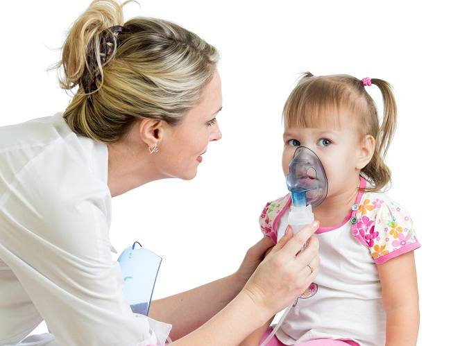

Ispa: Penyebab, Gejala, Pengobatan, dan Pencegahan
Pengertian ISPA
Infeksi saluran pernapasan akut atau ISPA adalah infeksi yang terjadi di saluran pernapasan, baik saluran pernapasan atas maupun bawah. Infeksi ini dapat menimbulkan gejala batuk, pilek, dan demam. ISPA sangat mudah menular dan dapat dialami oleh siapa saja, terutama anak-anak dan lansia.
Sesuai dengan namanya, ISPA menimbulkan peradangan di saluran pernapasan, mulai dari hidung hingga paru-paru. Pada sebagian besar kasus, ISPA disebabkan oleh virus dan dapat sembuh dengan sendirinya tanpa pengobatan khusus.

Penyebab ISPA
ISPA disebabkan oleh infeksi virus atau bakteri di saluran pernapasan. Saluran pernapasan yang dapat terserang infeksi bisa saluran pernapasan atas atau bawah. Meski demikian, ISPA paling sering disebabkan oleh infeksi virus dan paling sering terjadi di saluran pernapasan bagian atas.
Beberapa jenis virus yang sering menyebabkan ISPA adalah:
- Rhinovirus
- Respiratory syntical viruses (RSVs)
- Adenovirus
- Parainfluenza virus
- Virus influenza
- Virus Corona
Sementara itu, beberapa jenis bakteri yang juga bisa menyebabkan ISPA adalah:
- Streptococcus
- Haemophilus
- Staphylococcus aureus
- Klebsiella pneumoniae
- Mycoplasma pneumoniae
- Chlamydia
Adapun beberapa penyakit yang termasuk ke dalam ISPA adalah:
- Batuk pilek (common cold)
- Sinusitis
- Radang tenggorokan akut (faringitis akut)
- Laringitis akut
- Pneumonia
- COVID-19
Penularan virus atau bakteri penyebab ISPA dapat terjadi melalui kontak dengan percikan air liur orang yang terinfeksi. Virus atau bakteri dalam percikan liur akan menyebar melalui udara kemudian masuk ke hidung atau mulut orang lain.
Selain kontak langsung dengan percikan liur penderita, virus juga dapat menyebar melalui sentuhan dengan benda yang terkontaminasi atau berjabat tangan dengan penderita.
Faktor risiko ISPA
Walaupun penyebarannya mudah, ada beberapa kelompok orang yang lebih rentan tertular ISPA, yaitu:
- Anak-anak dan lansia
- Orang dengan daya tahan tubuh yang lemah
- Penderita gangguan jantung dan paru-paru
- Perokok aktif
Anak-anak dan lansia memiliki sistem kekebalan tubuh yang rendah sehingga rentan terhadap berbagai infeksi. Selain itu, penyebaran virus atau bakteri ISPA di kalangan anak-anak dapat terjadi sangat cepat, karena anak-anak sering berinteraksi dan melakukan kontak dengan anak-anak yang lain.
Sistem kekebalan tubuh sangat berpengaruh dalam melawan infeksi virus atau bakteri. Ketika daya tubuh menurun, misalnya karena menderita AIDS atau kanker, maka risiko terinfeksi akan makin meningkat.
ISPA lebih sering terjadi pada seseorang yang sudah memiliki penyakit jantung atau gangguan pada paru-paru sebelumnya.
Perokok lebih berisiko mengalami gangguan fungsi paru dan saluran pernapasan. Hal ini mengakibatkan perokok juga rentan mengalami ISPA dan cenderung lebih sulit untuk pulih.
Gejala ISPA
Gejala ISPA berlangsung antara 1–2 minggu. Pada sebagian besar kasus, penderita gejala akan mereda setelah minggu pertama.
Gejala infeksi saluran pernapasan akut di saluran pernapasan atas dan bawah bisa berbeda. Pada penderita ISPA yang terjadi di saluran pernapasan atas, gejala yang dapat timbul adalah:
- Batuk
- Bersin
- Hidung tersumbat
- Pilek
- Demam
- Mudah lelah
- Sakit kepala
- Nyeri menelan
- Mengi
- Pembesaran kelenjar getah bening
Sementara itu, gejala ISPA yang terjadi di saluran pernapasan bawah antara lain:
- Batuk berdahak l
- Sesak napas
- Demam
Kapan harus ke dokter
Lakukan pemeriksaan ke dokter jika Anda mengalami gejala di atas, terutama jika gejala makin memburuk dan telah berlangsung selama lebih dari 3 minggu.
Periksakan diri ke dokter jika Anda mengalami gejala di bawah ini:
- Demam di atas 39˚C atau menggigil
- Sulit bernapas
- Batuk darah
- Penurunan kesadaran
Pengobatan ISPA
Seperti yang telah disebutkan sebelumnya, ISPA paling sering disebabkan oleh virus. Oleh karena itu, pasien tidak memerlukan pengobatan khusus. Meski begitu, ada upaya yang dapat dilakukan secara mandiri di rumah untuk meredakan gejala, yaitu:
- Memperbanyak istirahat dan konsumsi air putih untuk mengencerkan dahak agar lebih mudah untuk dikeluarkan
- Mengonsumsi minuman lemon hangat atau madu, untuk meredakan batuk
- Berkumur dengan air hangat yang diberi garam jika mengalami sakit tenggorokan
- Menghirup uap dari semangkuk air panas yang telah dicampur dengan minyak kayu putih atau mentol, untuk meredakan hidung tersumbat
- Memosisikan kepala lebih tinggi ketika tidur dengan menggunakan bantal, untuk melancarkan pernapasan
Jika gejala yang dialami tidak membaik, pasien perlu menemui dokter.
Pencegahan ISPA
Pencegahan utama ISPA adalah dengan menerapkan perilaku hidup bersih dan sehat. Beberapa cara yang dapat dilakukan, yaitu:
- Cuci tangan secara teratur, terutama setelah beraktivitas di tempat umum.
- Hindari menyentuh wajah, terutama bagian mulut, hidung, dan mata.
- Gunakan sapu tangan atau tisu untuk menutup mulut ketika bersin atau batuk, agar penyakit tidak menyebar ke orang lain.
- Perbanyak konsumsi makanan kaya vitamin, terutama vitamin C, untuk meningkatkan daya tahan tubuh.
- Bersihkan rumah dan lingkungan sekitar secara rutin.
- Lakukan olahraga secara rutin.
- Hentikan kebiasaan merokok.
- Dapatkan vaksinasi, baik vaksin MMR, influenza, maupun pneumonia, dan diskusikan dengan dokter mengenai keperluan, manfaat, dan risiko dari vaksinasi ini.